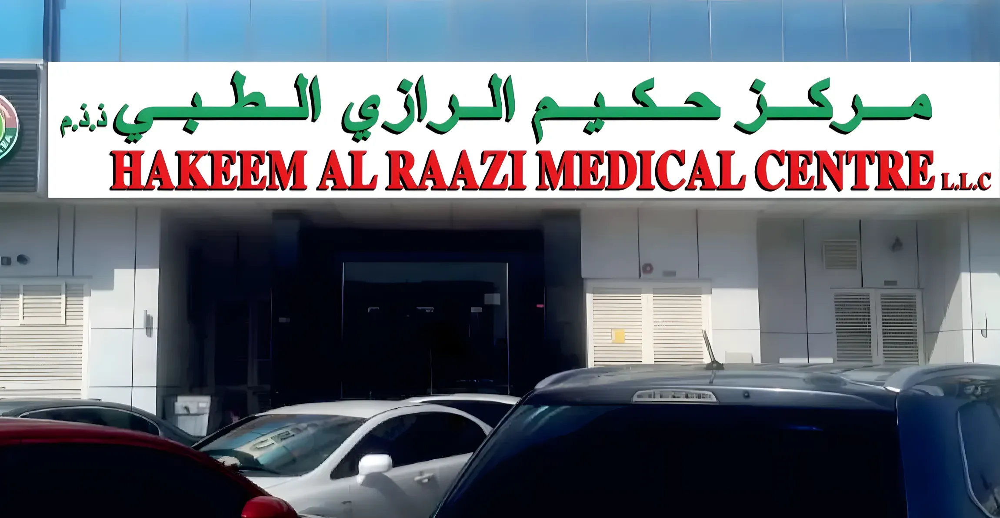
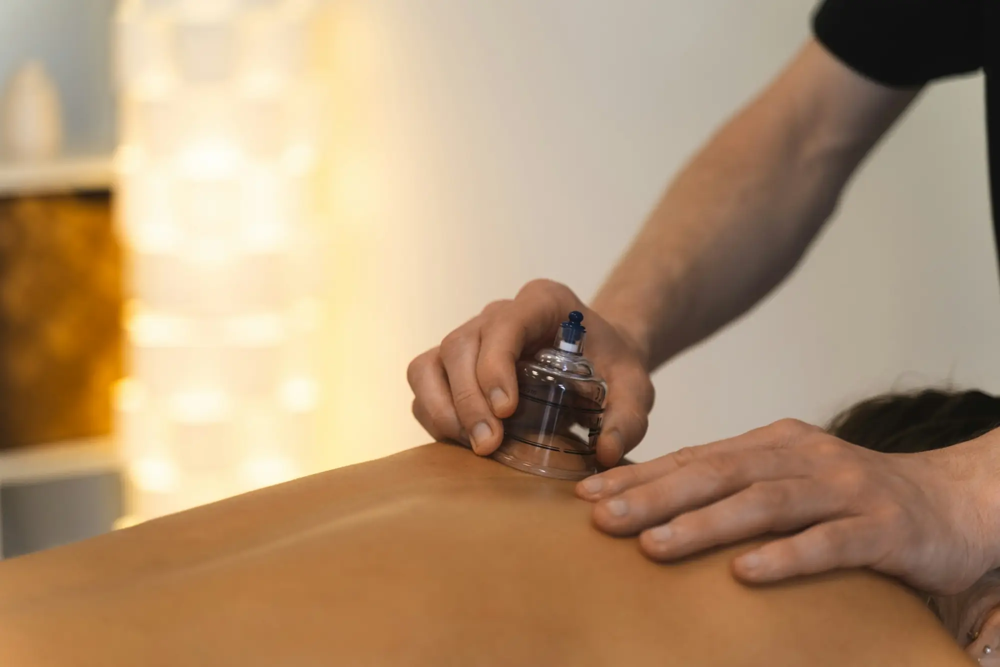
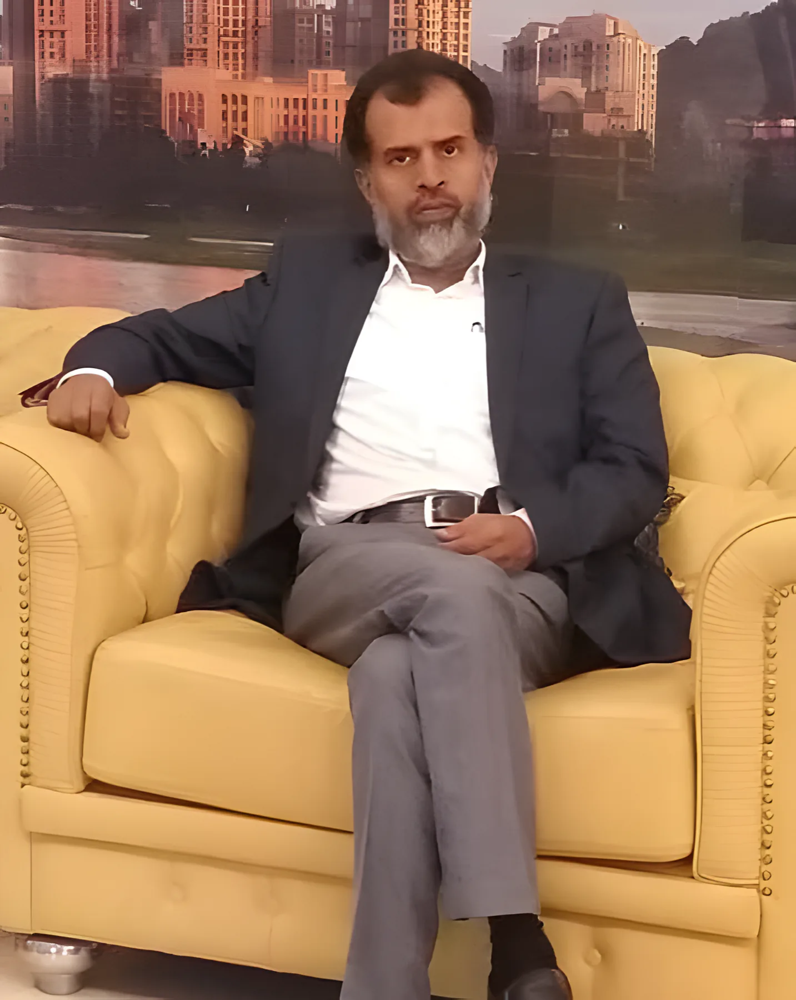

مركز حكيم الرازي الطبيHakeem Al Raazi
الطب اليوناني والحجامة في مدينة الرياض
مركز للطب اليوناني (الطب العربي اليوناني) في الطابق الثاني من بناية توين ريزيدنس، شارع الرديف. الدكتور محمد هداية الله شريف وفريقنا المرخّص يستقبلونكم للاستشارة والحجامة (الجافة والرطبة) والمساج العلاجي والعلاج بالأعشاب.

العلاجات والأسعار
ثلاث خدمات تقدر تحجزها مباشرة، والأسعار للجلسة الواحدة. ما تعرف وش تحتاج؟ ابدأ باستشارة والطبيب يوجّهك.
-
01
الحجامةحجامة جافة أو رطبة على يد ممارس مرخّص. كثير من مراجعينا يحجزون في أيام السنّة من الشهر الهجري.
-
02
استشارة الطبيب الأولساعة كاملة مع الطبيب: تاريخك المرضي، فحص النبض والمزاج، ثم خطة للغذاء والدواء والعلاج.
-
03
مساج علاجي للظهر والعمود الفقريتدليك يوناني (الدلك) للظهر والرقبة والمفاصل، مع نصائح للجلسة والتمارين والعادات اليومية.
عندك سؤال عن الدفع أو التأمين؟ اسألنا على واتساب قبل زيارتك. تفاصيل العلاجات (بالإنجليزي)
طرق العلاج
للطب اليوناني أربع طرق علاج، وأغلب الخطط تجمع بين اثنتين أو ثلاث منها.
العلاج بالدواءأدوية من الأعشاب والمعادن
- علاجات من الأعشاب والمعادن ومواد حيوانية
- تُركّب حسب حالتك ومزاجك
يراجعنا الناس لمشاكل الهضم، واضطراب الهرمونات، ومشاكل الجلد، وآلام المفاصل، والتعب.
العلاج بالغذاءالحمية العلاجية
- نظام غذائي حسب مزاجك
- حسب طبيعة مرضك
- يتغيّر مع الفصول
يسألنا المراجعون عن الوزن والهضم وصحة الكبد.
العلاج بالتدبيرالحجامة، الفصد، الدلك
- الحجامة الجافة والرطبة
- الفصد
- الدلك: المساج العلاجي اليوناني
يراجعنا الناس للآلام المزمنة، والتهاب المفاصل، والصداع النصفي، والتعب.
التشخيصالفحص وتقييم الحالة
- فحص النبض
- الفحص السريري وتقييم المزاج
- تحويل للتحاليل أو الأشعة عند الحاجة
الفحص اليوناني التقليدي مع الفحص الطبي المعتاد، حتى تبدأ الخطة من المكان الصحيح.
المرأة والأسرةرعاية المرأة والعائلة
- توازن الهرمونات
- اضطراب الدورة الشهرية
- استشارات الخصوبة
رعاية يونانية طبيعية للمرأة وللعائلة كلها، من الصغار إلى الكبار.
أفضل أيام الحجامة هذا الشهر
كل شهر ننشر الأيام الفردية من 15 إلى 29 من الشهر الهجري. هذه الأيام القادمة حسب تقويم أم القرى، وقد يتغيّر التاريخ يوماً حسب رؤية الهلال، فتأكد معنا على واتساب.
الشهر الهجري: جمادى الآخرة 1448
- 15الأربعاء 25 نوفمبر
- 17الجمعة 27 نوفمبرمساءً فقط
- 19الأحد 29 نوفمبرصباحاً فقط
- 21الثلاثاء 1 ديسمبر
- 23الخميس 3 ديسمبر
- 25السبت 5 ديسمبر
- 27الاثنين 7 ديسمبر
- 29الأربعاء 9 ديسمبر

جلسة الحجامة حوالي ساعة ونصف، وسعرها 400 درهم. يوم الجمعة نفتح مساءً فقط، ويوم الأحد صباحاً فقط.

الدكتور محمد هداية الله شريف
المؤسس والمدير الطبي ورئيس مجلس الإدارة
أخصائي طب وجراحة يونانية، مرخّص من دائرة الصحة أبوظبي وهيئة الصحة بدبي ووزارة الصحة
«في مركزنا لا نعالج الأعراض فقط، بل نبحث عن السبب الأساسي للمرض ونعالجه بطرق آمنة وفعّالة ومناسبة لكل مريض.»
زيارتك الأولى
- 1
احجز موعدك
راسلنا على واتساب أو اتصل. أحضر تقاريرك والأشعة والأدوية اللي تستخدمها الحين.
- 2
النبض والمزاج
الطبيب يسمع تاريخك المرضي، ويفحص النبض والمزاج. وإذا احتجت تحليلاً أو أشعة نحوّلك لها.
- 3
خطة خاصة بك
غذاء ودواء عشبي وعلاج، حسب حالتك ومزاجك والموسم.
- 4
العلاج والمتابعة
حجامة أو مساج أو دواء هنا في المركز، على يد ممارسين مرخّصين، وفق قواعد دائرة الصحة أبوظبي للطب التقليدي والتكميلي.
موقعنا
توين ريزيدنس، شقة 201، الطابق الثاني، شارع الرديف، مدينة الرياض
RD 21، أبوظبي.
| السبت | 10ص–2م · 6–10م |
| الأحد | 10ص–2م |
| الاثنين | 10ص–2م · 6–10م |
| الثلاثاء | 10ص–2م · 6–10م |
| الأربعاء | 10ص–2م · 6–10م |
| الخميس | 10ص–2م · 6–10م |
| الجمعة | 6–10م |
الوصول إلينا
ابحث عن اللافتة الخضراء والحمراء، ثم المصعد إلى الطابق الثاني.